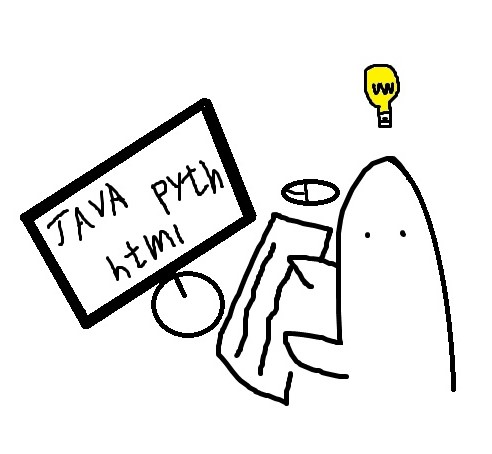

Coding
- Html
- Css
- JavaScript
- Java
위에서부터 차례대로 공부할 예정 (python은 맛보기로 조금하고 보류중)
코딩을 공부한지 어느덧 +20일, 친구따라 취미로 시작한 코딩이 실력이늘고
스킬이 붙자 재미있어지고
불편한 문제에 직면했을때 코딩으로 해결하려는
나 자신을 발견했다.

★내가 생각하는 코딩이란?
코딩을 점점배우면서 코딩을 보는 나의 관점과 정의가 달라지고 있다.
처음에는 그저 컴퓨터 언어 정도로 밖에는 생각되지 않던 것들이 익숙해지고,
알아가면서 이제는 문제를 해결해주는 해결책 이라는 생각이 든다.
지금당장 숫자 1부터 100까지 적어 프린트해야 한다고 생각해보자.
조금 귀찮겠지만 손이 빠른사람이라면 3분안에 가능할것이다.
그렇다면 1부터 100,000,000,000 까지라면 어떨까?
3분이 아니라 300일이 걸려도 불가능할것이다. 하지만 python 같은 프로그래밍 언어를
사용한다면,
정말 간단하게 해결할수있다.
이렇듯 별것아닌 타이핑과 연산부터 시작해서 엄청난 일들을 수행해주는것이
프로그래밍 언어, 즉 코딩 이다.
★코딩을 접하는방법?
컴퓨터 관련 학과생이라면 자연스레 접하게되는 코딩이지만 일반인들은
쉽게 접할기회가 많지않다.
나역시도 코딩을 하는친구가 없었다면 평생 안했을지도..?
코딩에 관심이 있고, 알고싶고 배우고싶지만 어떻게 해야할지 모르는 당신을위해!
코딩입문용으로 최고의 사이트를 소개해주고자 한다.
https://opentutorials.org/course/1
필자도 생활코딩 사이트에서 html을 시작했고 5일차인 지금 여러분이 보고있는
이 페이지를 만들고 있다.
★앞으로 내가 할 코딩의 방향성
개발자로 진로를 정한 지금, 비전공생인 나에겐 엄청난 시련이 기다리고 있다.
앞으로 갈길이 멀지만 지금은, 가야 할 길에 절망하기보단 걸어온 길에 스스로를 칭찬해주고 싶다.
현재는 대학원을 생각중이고 아직 어떻게될지는 모르겠다..
뜻이맞는 동료들과 만들고싶은 어플도 만들고 여러가지 창작물들을 배출하면서 개발자로서
인정받고 싶고 걸어가고 싶다.
그때까지 이 웹사이트는 존재한다
바닐라JS
git 사용법
게시판
특정브런치 클론만들기
새폴더 생성 - 우클릭 git bash -
git clone -b {영인} --single-branch {주소}
생성된 클론 들어가서 작업 (클론파일안에 있던 git은 파일 따라다녀야됨)